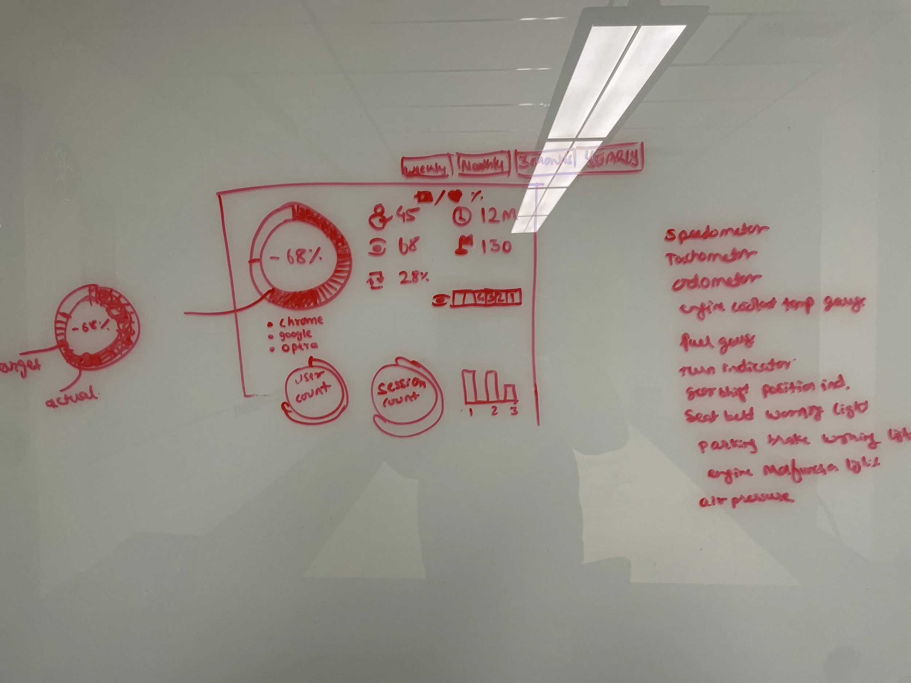
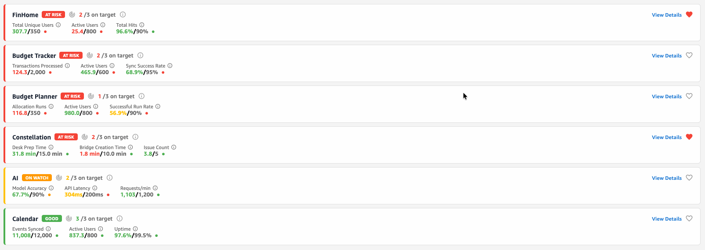
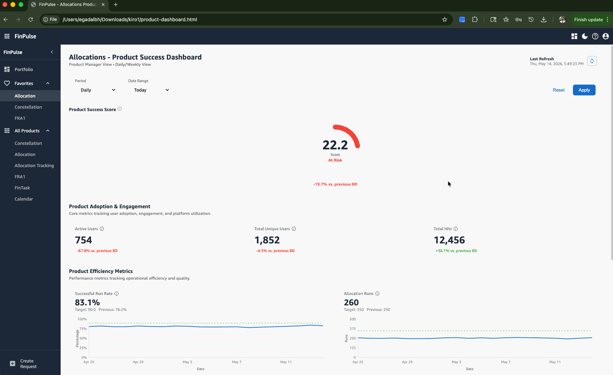

Back to Work

1 month
Manual cycle before
2 sec
Live update after
+20%
Efficiency in 3 months
The Problem
- Executives reviewing manually generated reports couldn't easily identify which products needed attention — delaying decisions and preventing prioritization of resources.
- Inconsistent metrics across products made fair comparison and progress tracking difficult.
- Manual reporting was scattered across different products and formats.
- Teams spent 10 hours monthly consolidating data into strategic reports.
- There was no unified view of all products.
"We are at the pilot seat, responsible for helping our customers get where they want — safely and as quickly as possible."— Director, on the team's guiding mission
The Approach
We identified the key metrics, set thresholds with color coding, and designed the data flow. The result was a single source of truth: an automated dashboard with live updates and drill-down capability for faster, effective, data-driven decision-making.
Inspired by a cockpit
The layout borrows from a pilot's cockpit — the most decision-critical instruments always in view, secondary detail a glance away.
From sketches to system
Early ideation sketches worked out the information hierarchy before any pixels.

Color-coded, auto-populated data
Thresholds drive color and priority automatically, so status reads at a glance without manual formatting.

Drill down to detail
Any metric expands into its underlying detail — the two-second answer to "why?".

The Result
- Efficiency increased 20% across the product suite in the first 3 months.
- Real-time data visibility replaced manual monthly reports — a one-month cycle became a two-second live view.